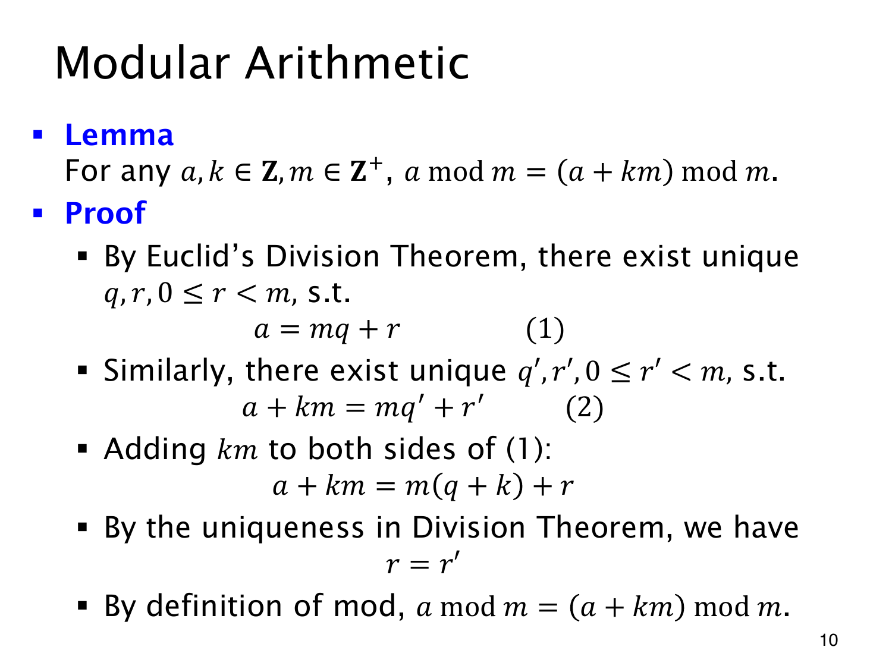

L1.12 · 第 10 页讲解原文
查看这一页课件

加减整组，余数不变
17mod5=2。减掉四组 5 后，17−4⋅5=−3，而 (−3)mod5 仍是 2。被除数变成负数，并不改变标准余数的非负要求。
一般地，对整数 a,k 和正整数 m，有
amodm=(a+km)modm.
每组有 m 个单位；增加或减少整组，改变的是组数，剩下的部分不变。
用带余除法可把这一点证明清楚。设 a=mq+r，其中 0≤r<m，则
a+km=m(q+k)+r.
q+k 是整数，r 仍在合法范围，所以这个式子已经给出 a+km 的标准余数 r。课件又写出 a+km=mq′+r′，两者比较后，带余除法的唯一性便给出 r=r′。
k 可以为负，因此算余数时可以先减去方便的模数倍数，把整数缩小后再算。